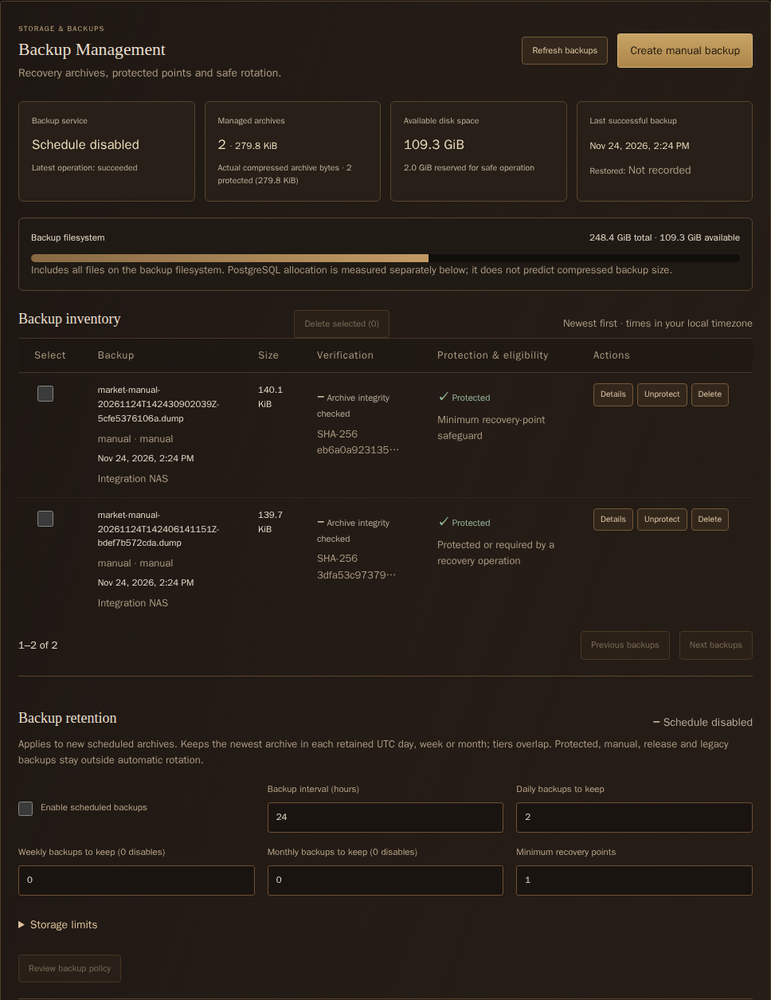
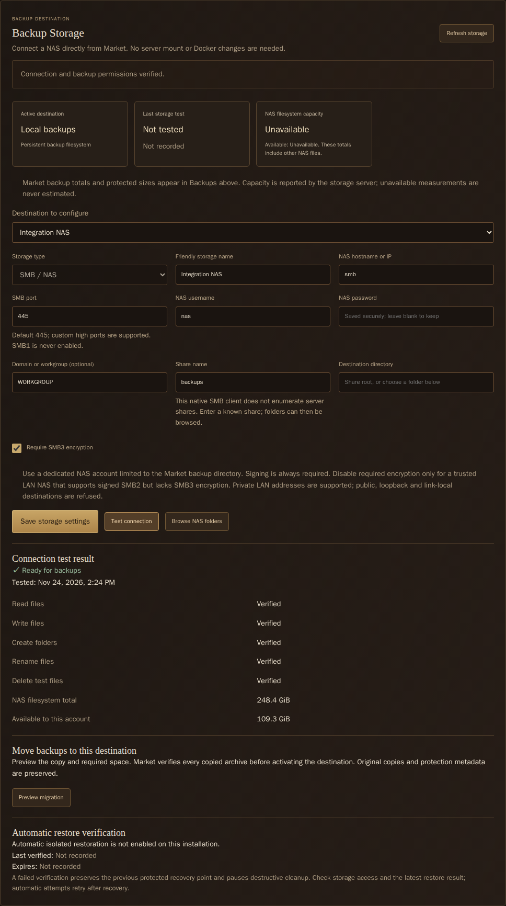
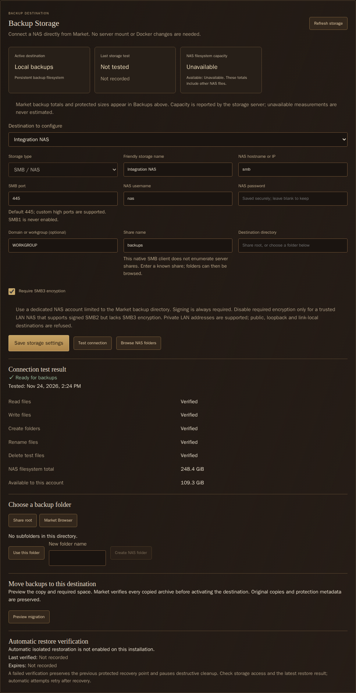
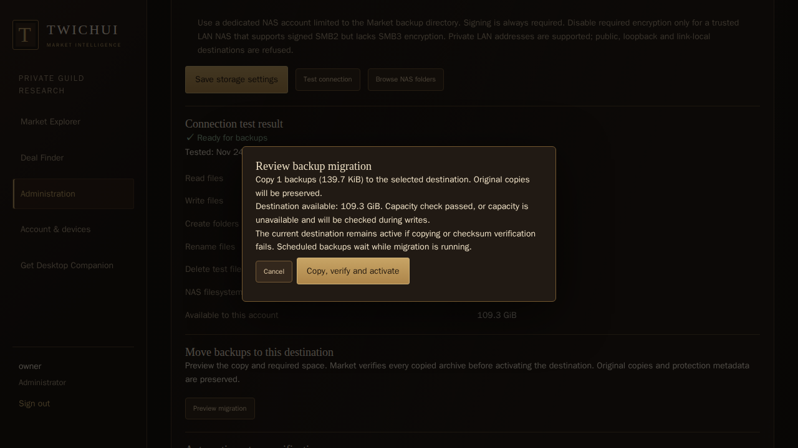
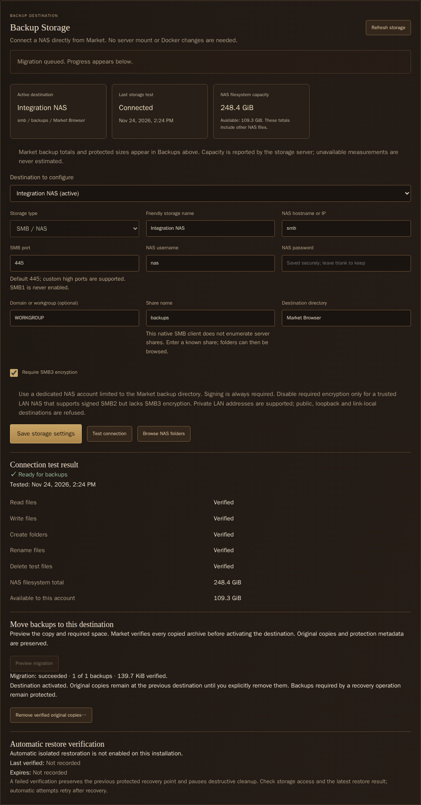
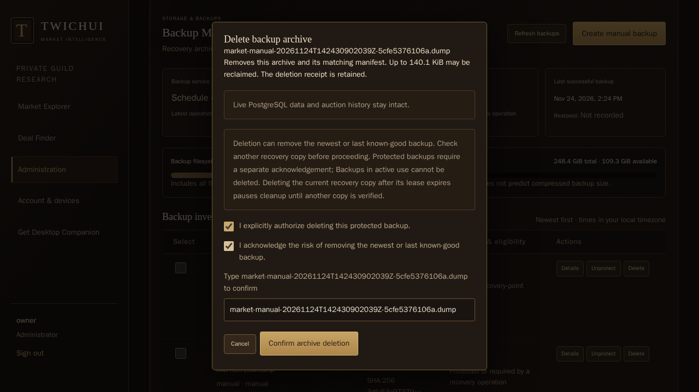
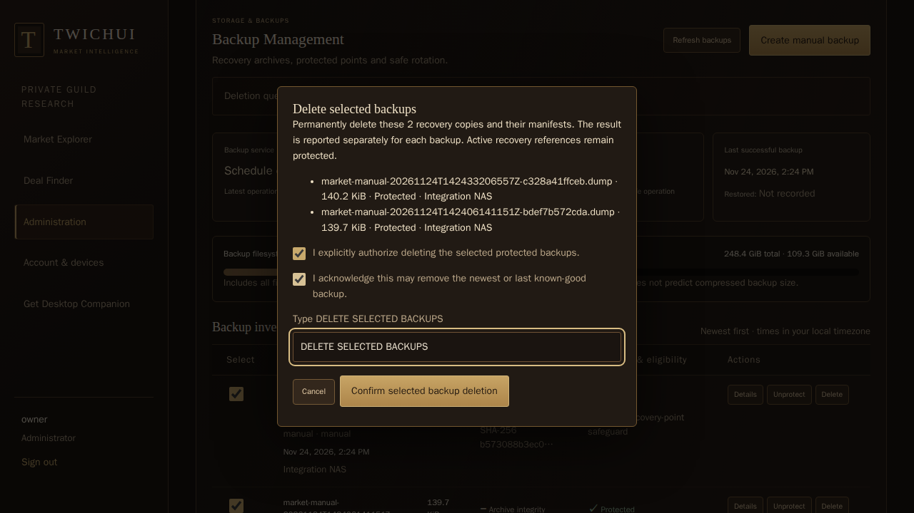
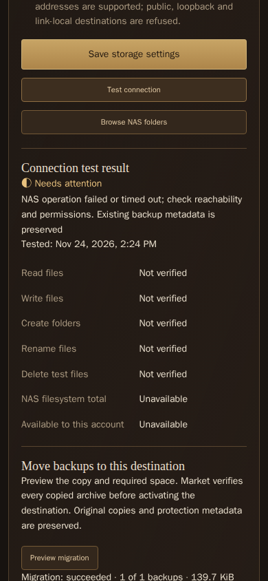
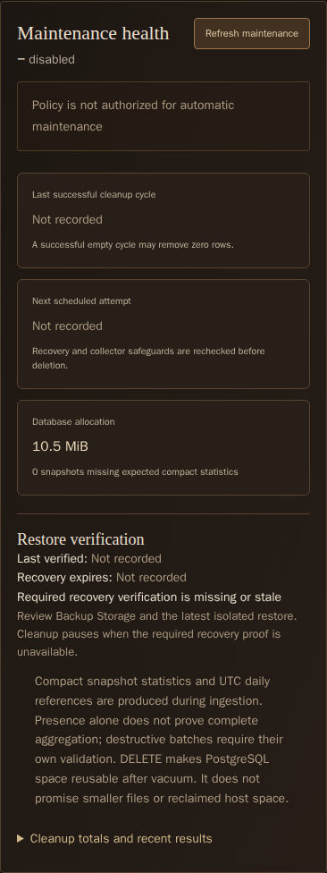

Backup, NAS storage and maintenance review
These are actual browser captures against an isolated market_test database and a disposable native SMB service. Names and auction data are synthetic fixtures. This gallery does not claim a production NAS connection or production backup deletion.
The complete browser workflow passed configuration, credential redaction, connection/permission testing, directory browsing/creation, checksum migration, explicit original-copy removal, protected and bulk deletion, offline feedback, mobile geometry and accessibility checks. Existing espresso/bronze styling is retained.
Nas Backups Inventory
Open full-resolution screenshot
Nas Connected Desktop
Open full-resolution screenshot
Nas Folder Browser
Open full-resolution screenshot
Migration Confirmation
Open full-resolution screenshot
Migration Success
Open full-resolution screenshot
Protected Delete Confirmation
Open full-resolution screenshot
Bulk Delete Confirmation
Open full-resolution screenshot
Nas Offline Mobile
Open full-resolution screenshot
Maintenance Mobile
Open full-resolution screenshot